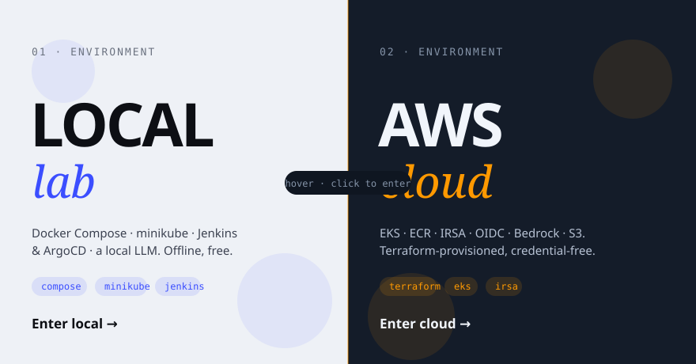
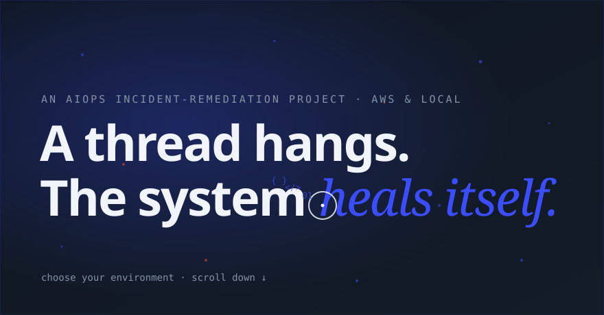
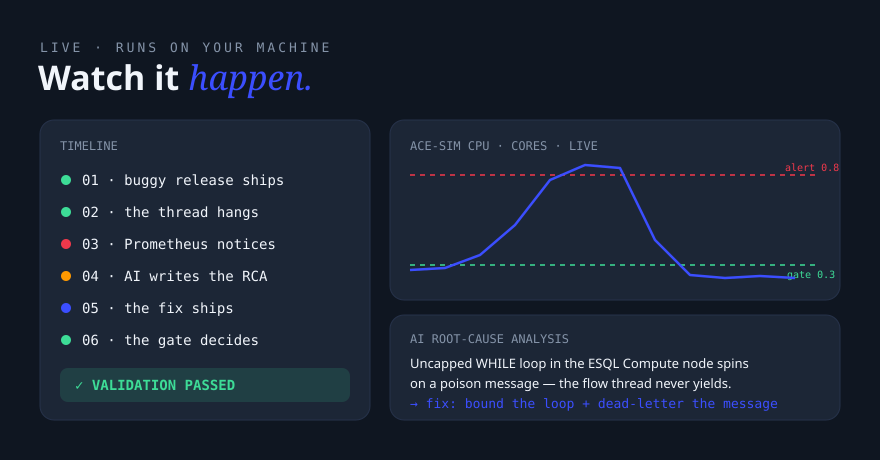

A production incident lifecycle, fully automated and fully demoable — detect → diagnose with an LLM → fix → verify. This page showcases the experience layer: a cinematic, dual-world site that runs the whole pipeline live in your browser.
After a cinematic loader and a full-screen intro, a scroll-driven transition assembles a game-style environment picker. Each world is its own visual design, architecture story, and demo surface.

The headline splits into individual letters that fly in with 3D rotation and blur, then ripple on hover — deliberately distinct from the scramble-decode used on labels and the glow used on headings.

The live demo streams the real incident loop over Server-Sent Events: a buggy release ships, CPU spikes past the alert threshold, an AI writes the root-cause analysis, the fix redeploys, and a hard validation gate proves recovery.

Every interaction is built in vanilla JS on top of GSAP + Three.js — no framework, no build step.
A filled cursor that inverts whatever's under it, grows over interactive elements, with magnetic pull on buttons.
Fading code glyphs trail the pointer everywhere, throttled into a clean stream.
Mono labels shuffle through random glyphs and resolve left-to-right on hover.
The headline assembles letter-by-letter and ripples on hover — the site's headline motion.
A Three.js WebGL field that travels with scroll and re-themes per world.
Lenis smooth scroll, scroll-triggered reveals, and a horizontal six-stage pipeline walk.
A soft light tracks the pointer behind the giant display type.
Live architecture nodes scale up as the cursor nears — one diagram per world.
The six-stage self-healing loop the site dramatizes — and actually runs.
A screen recording of the live experience.
Free and offline with a local LLM — Docker Desktop, Ollama (ollama pull qwen3:8b), Python 3.11+.
pip install fastapi uvicorn requests python website/server.py # open http://localhost:8080 → Local → Live Demo → Start Demo